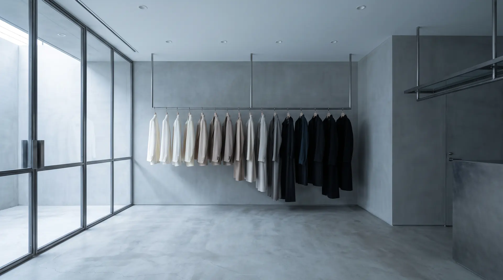
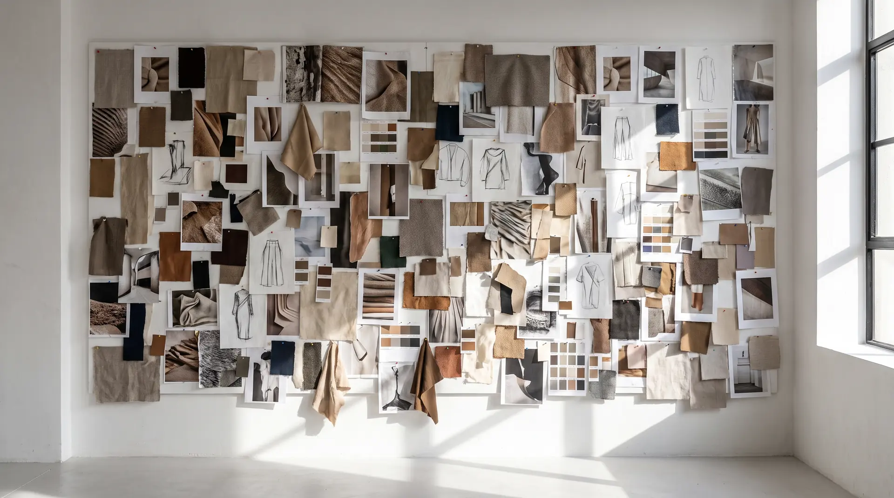
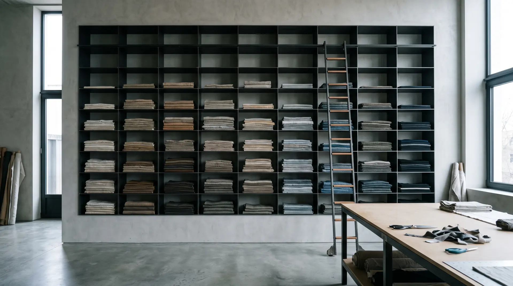
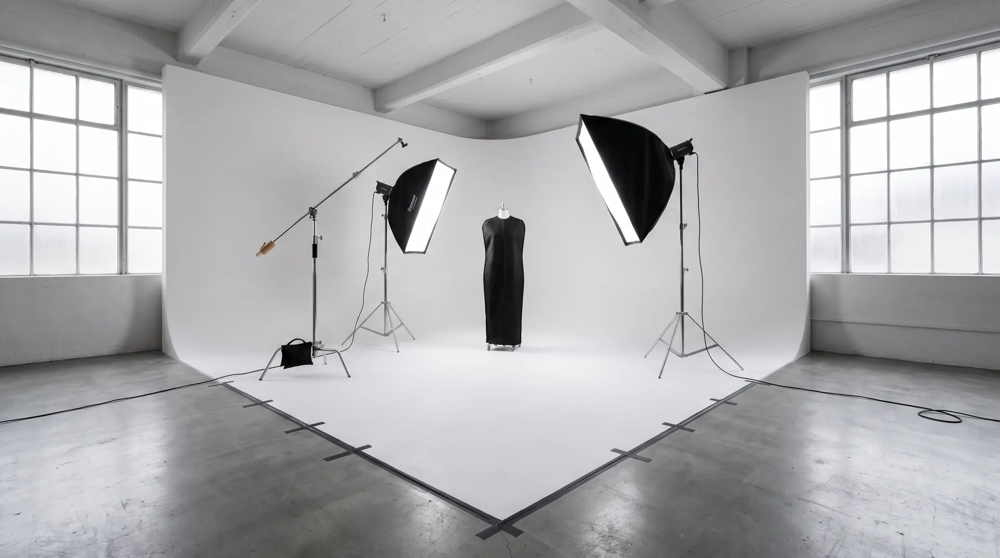

Collections
Whole lines,
from the first sketch.
Collections
Not every commission is one garment. I build whole lines too. A collection developed from nothing, or a wardrobe for a tour, made in the numbers a schedule actually needs.
-
01
A line from scratch
Concept, line-up, patterns, samples. You arrive with a direction and a deadline. You leave with a collection that exists.
-
02
Touring wardrobe
Stage clothes are built to a different standard: quick changes, hard light, and the same piece worn eighty nights in a row. Duplicates where duplicates are needed, and repairs between cities.
-
03
On demand
A line made to your order, in the quantity you need and the time you have. Small runs, made properly, rather than large ones made quickly.



Tell me what you are building, and when it has to exist.
By appointment only · Currently Amsterdam · Online meetings welcome